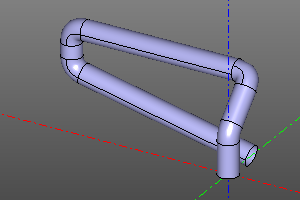
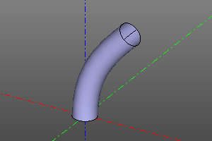
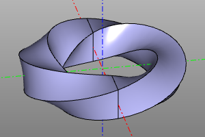

Trajectory sweep.
A wide class of reference geometry operations is represented by operations, constructing a body by translation (English sweep) of a certain profile or a family of profiles (profile, profiles) along a given trajectory spine.
Formally about what a trajectory sweep is:
Trajectory sweep is a technique for constructing a surface by sweeping a profile along a path. In general, the profile view is not constant and can change according to certain laws. Thus, there are two questions regarding how the profile extends along the trajectory, or, in other words, we must define two laws, namely:
- The law that determines the shape of the trajectory.
- The law determining the shape of the profile.
It is convenient to split the second law into two sub-laws: 1.1. The law that determines the shape of the translated body. 1.2. The law governing the angular evolution of the basis.
In fact, the variety of all trajectory translation operations available in the system are different forms of answers to these questions.
Linear sweep.
The most commonly used method of adding volume to a flat object. The operation unfolds the flat body face along the vector vec. Specifying a single coordinate instead of a vector will stretch the model in the positive Z direction. If the center option is specified, after the operation is performed, the model will be translated in the direction opposite to vec by its half length.
Signature:
extrude(proto=face, vec=(x,y,z), center=True/False)
extrude(proto=face, vec=z, center=True/False) #equal: vec=(0,0,z)
face.extrude(vec) #alternate
Example:
ngon(r=10, n=10)
ngon(r=10, n=10).extrude(4)
extrude((1, 0, 4), ngon(r=10, n=10))
extrude(textshape(text="TextShape", fontpath=FONTPATH, size=100), 20)


Trumpet.
Draws on the path spine and the circular profile of the radius r. maxdegree is the maximum bspline degree of the surface. maxsegm -? bounds - when this option is set, the operation returns a tuple from the result, as well as the profiles in the first and last positions.
Signature:
tube(spine, r, tol=1e-6, cont=2, maxdegree=3, maxsegm=20, bounds=False):
Примеры:
POINTS = [ (0,0,0), (0,0,20), (0,20,40),
(-90,20,40), (-90,20,20), (0,20,0) ]
spine = rounded_polysegment(POINTS, r=10)
a = tube(spine, r=5)
POINTS = [ (0,0,0), (20,0,40) ]
TANGS = [ (0,0,1), (1,0,1) ]
spine = interpolate(POINTS, TANGS)
b = tube(spine, r=5, maxdegree=8)
 
Sweep a profile along a path. Sweep with a variable profile.
The operation constructs a body from one profile or a set of successive profiles profiles, stretched along the spine path. Specifying the frenet option activates the law of variation of the angular position of the profile in accordance with the Frenet-Serre trihedron. The binormal option activates the law of variation of the angular position of the profile in accordance with the constant binormal.
Signature:
pipe_shell(profiles, spine, frenet=False, binormal=vector3(0,0,0), solid=True)
Примеры:


Body of rotation.
The operation of creating a body of revolution from the proto prototype. If it is necessary to create a sector, the angle yaw is set. If radius r is specified, the object is rotated 90 degrees around the X axis and displaced along the X axis by a distance equal to the radius r.
Signature:
revol(profile, r=None, yaw=deg(360))
Example:


Body of rotation. (extended version).
An extended version of the revol operation. Constructs a body of revolution from the prototype proto at the interval of the rotation angle yaw. Specifying the roll option allows you to change the rotation angle of the prototype as it traverses the interval. The body is built from reference copies of the prototype body, the number of copies is set by the n option. nparts defines the number of segments of the resulting rotation body.
Signature:
revol2(profile, r, n=30, yaw=(0,deg(360)), roll=(0,0), nparts=None)
Примеры:
revol2(profile=square(10, center=True), r=20, n=60, yaw=(0,deg(360)), roll=(0,deg(360)))
